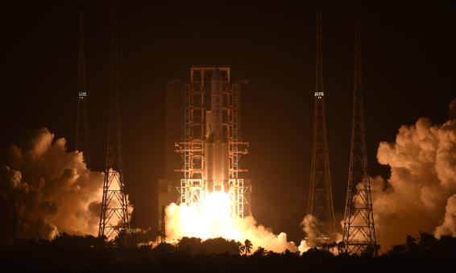

Video: Fan Wei/GT
China launches Chang’e-5 mission via Long March-5 rocket to retrieve Moon rocks at Wenchang Space Launch Center from South China’s Hainan Province early Tuesday morning. Photo: Li Dike
About 2,200 seconds after lift-off, the Chang'e-5 lunar probe separated from the rocket and entered the Earth-Moon transfer orbit with the perigee at 200 km and the apogee at about 410,000 km.
Despite the difficulties brought by the COVID-19 epidemic, China's aerospace sector has been able to launch not only the country's first-ever Tianwen-1 Mars probe, but also the latest lunar sample return mission, showcasing the country's resilience and increasingly mature capabilities in the space sphere, according to observers.
Dubbed one of the most complicated and challenging space exploration projects ever attempted, Chang'e-5 will carry out the third stage of China's current lunar programs, which involves three phases—orbiting, landing and return. The first two phases have been completed successfully.
Wang Yanan, chief editor of Aerospace Knowledge magazine, told the Global Times that the highly complex, forward-looking technology applied in this project could be regarded as "an unmanned task that lays the foundation for future manned lunar missions."
"Analysis of the lunar samples shows that contents within the soil and rocks could be turned into water and oxygen, which will be useful in supporting the operation of the Moon base and serve as supplementary fuel for lunar landing vehicles," Pang Zhihao, a Beijing-based space expert, told the Global Times.
More importantly, scientists have found in the lunar samples the ideal material for nuclear fusion, and enough of it to meet human's energy needs for about 10,000 years, Pang added.
China's future Chang'e-6 mission will also automatically collect lunar samples for comprehensive analysis and research, and hopefully carry international payloads on board.
Chang'e-7 will comprehensively explore the moon, while Chang'e-8 will explore the possibility of building an international lunar research base, Global Times previously learned from CNSA. Chang'e-8 will also test 3D printer technology in the hopes of assisting future lunar residents.
"To build a research base on the Moon, we first need to figure out what it is made of, by analyzing the soil composition and geological structure, and then making use of the raw materials at hand on the Moon for our own exploration purposes," Song Zhongping, an aerospace observer and TV commentator, told the Global Times.
Infographic: GT
China launched its first lunar probe mission, Chang'e-1, in October 24, 2007 via a Long March 3A Y14 carrier rocket. In the 13 years since then, China has launched a total of five missions, all named after the lunar goddess Chang'e, with domestically developed Long March rockets, scoring a perfect success rate.
The 57-meter-long Long March-5, with a take-off weight of about 870 tons and a thrust of over 1,000 tons, is capable of launching a payload of up to 14 tons into the geosynchronous transfer orbit (GTO), making it the go-to rocket model for the mission, as the Chang'e-5 lunar probe weighs 8.2 tons, one of the heaviest probes that has ever been launched by China.
According to China Launch Vehicle Technology (CALT), during the 14th Five-Year Plan (2021-25), the Long March-5 rocket series will be deployed to launch core and experimental cabinets for the country's first-ever space station, and will be tasked with completing the construction of the space station in two to three years.
"Long March-5 is the only member of the Long March family that is capable of launching such a heavy payload into the lunar transfer orbit. And the mission in return examines the rocket's capabilities and showcases the strength of China's space sector," Li Minghua, the first commander-in-chief of the Long March-5 and Party chief of CALT, under the state-owned aerospace giant China Aerospace Science and Technology Corporation (CASC), the rocket's developer, told the Global Times.
Breakthroughs to make
Infographic: GT
Sources close to the lunar probe mission told the Global Times that the Chang'e-5 probe is set to achieve four firsts in China's aerospace history.
It will conduct the first-ever robotic sample collecting on the lunar surface, spending two days on the Moon collecting around 2kg of lunar material.
After packaging the lunar material, the probe's lander will perform a highly complex take-off mission from the rough lunar terrain, overcoming the lack of a proper launch tower and other difficulties, which will also be a first.
A greater challenge lies in wait after the lander's lift-off, as the Chang'e-5 ascender will have to rendezvous and dock with the orbital module at the lunar orbit some 380,000 kilometers away from Earth, which has never been done before.
Finally, the return capsule carrying moon samples will then fly to Earth from 380,000 kilometers away at a speed of 11 kilometers per second, reaching second cosmic velocity.
Interestingly, based on what the sources revealed to the Global Times, designers with the China Academy of Space Technology under CASC have come up with a semi-ballistic reentry to help the high-speed spacecraft return to Earth safely.
Similar to the way a stone can skip over water, the return capsule will sprint into the atmosphere and then ascend again out of it, in order to reduce its flying speed to first cosmic velocity, which is around 8 kilometers per second, before landing safely at the designated site on Earth.
Wang Yanan explained that this measure will greatly reduce the risk of damaging the return capsule and will ensure the sample's safety.
When asked why it was decided that the Chang'e-5 probe would take off early in the morning rather than in the daytime, CALT insiders told the Global Times that early morning would make it easier to enter the trajectory designed for the complex mission.
Also, taking off in the early morning will help reduce interference from the Sun, as solar radiation will disrupt the transmission of electric signals, affecting the tracking and controlling of the spacecraft from ground personnel, they said.
There are also less clouds and stabler weather conditions in the early morning, which will also help signal transmission and scientists' observations, they revealed.
The Chang'e-5 is scheduled to touch down in an area that has never been visited either by probe or human, in a massive lava plain known as Oceanus Procellarum, or "Ocean of Storms" - a region in the Moon's northwest corner which is visible to the naked eye from Earth.
Scientists believe that the rocks and soil in the region are only 3.7 billion years old. Compared with the previous lunar samples brought back to Earth, it will help scientists to understand better the volcanic activities of the Moon. Some engineering factors were also taken into consideration in choosing this site.
The lunar material collected by the Chang'e-5 probe was formed from the space weathering of lunar rocks after meteorite impact, solar wind and cosmic ray radiation. It consists of a considerable amount of rock fragments, minerals and meteorites, which provide valuable information for studying the geological evolution of the moon, as well as solar activities, Xiao Long, a professor at the Wuhan-based China University of Geosciences, told the Global Times.
In the 1970s, the Soviet Union successfully carried out three robotic sample return missions that retrieved a total of 330 grams of lunar soil. The Chang'e-5 plans to bring back 2 kilograms in one single mission.
The gap in weight reflects how much the ability to retrieve lunar samples has advanced over the past decades, Pang Zhihao said.
He explained that back in the 1970s, the Soviet Union missions adopted a direct ascending and return plan from the lunar surface, which required the ascender to use large amounts of fuel to carry the huge load on the return capsule, resulting in the sample weight being greatly compressed.
The Chang'e-5, however, is expected to carry out rendezvous and docking with the orbital module in the lunar orbit, greatly reducing the amount of fuel needed for the ascender and allowing room for more samples.